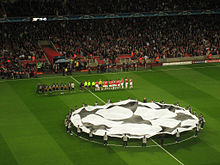
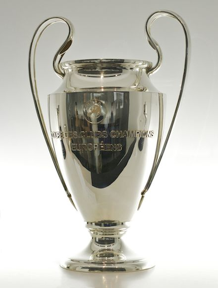

The UEFA Champions League (abbreviated as UCL) is an annual club football
competition organised by the Union of European Football Associations (UEFA)
and contested by top-division European clubs, deciding the competition winners
through a group and knockout format. It is one of the most prestigious football
tournaments in the world and the most prestigious club competition in European football, played by the
national league champions (and, for some nations, one or more runners-up) of their national associations.
Introduced in 1955 as the European Champion Clubs' Cup, commonly known
as European Cup, it was initially a straight knockout tournament open
only to the champions of Europe's domestic leagues, with its winner reckoned
as the European club champion. The competition took on its current name in 1992,
adding a round-robin group stage in 1991 and allowing multiple entrants from certain
countries since 1997. It has since been expanded, and while most of Europe's national
leagues can still only enter their champion, the strongest leagues now provide
up to four teams. Clubs that finish next-in-line in their national league,
having not qualified for the Champions League, are eligible for the second-tier
UEFA Europa League competition, and from 2021, teams not eligible for the UEFA
Europa League will qualify for a new third-tier competition called the UEFA Europa
Conference League.
In its present format, the Champions League begins in late June with a preliminary round,
three qualifying rounds and a play-off round, all played over two legs. The six surviving
teams enter the group stage, joining 26 teams qualified in advance. The 32 teams are drawn
into eight groups of four teams and play each other in a double round-robin system. The eight
group winners and eight runners-up proceed to the knockout phase that culminates with the
final match in late May or early June. The winner of the Champions League qualifies for
the following year's Champions League, the UEFA Super Cup and the FIFA Club World Cup.
In 2020, the traditional schedule for UEFA matches was disrupted due to the impact of the
COVID-19 pandemic. The format of the remainder of the tournament was temporarily amended
as a result, with the quarter-finals and semi-finals being played as single match knockout
ties at neutral venues in Lisbon, Portugal from 12 to 23 August.
Spanish clubs have the highest number of victories (18 wins),
followed by England (13 wins) and Italy (12 wins). England has the
largest number of winning teams, with five clubs having won the title.
The competition has been won by 22 clubs, 12 of which have won it more than once.
Real Madrid is the most successful club in the tournament's history, having won it 13 times,
including its first five seasons. Bayern Munich are the reigning champions, having beaten
Paris Saint-Germain 1–0 in the 2020 final.
The first time when champions of two European leagues met was
in what was nicknamed the 1895 World Championship, when English
champions Sunderland beat Scottish champions Heart of Midlothian 5–3.
Ironically, the Sunderland lineup in the 1895 World Championship consisted
entirely of Scottish players – Scottish players who moved to England to play
professionally in those days were nicknamed the Scotch Professors.
Prior to that, other "football World Championship" took place, however, those were
between Scottish and English cup winners, as the respective leagues were yet established.
The first pan-European tournament was the Challenge Cup, a competition between
clubs in the Austro-Hungarian Empire. The Mitropa Cup, a competition modelled
after the Challenge Cup, was created in 1927, an idea of Austrian Hugo Meisl, and
played between Central European clubs. In 1930, the Coupe des Nations (French: Nations Cup),
the first attempt to create a cup for national champion clubs of Europe, was played and organised
by Swiss club Servette. Held in Geneva, it brought together ten champions from across the continent.
The tournament was won by Újpest of Hungary.
Latin European nations came together to form the Latin Cup in 1949.
After receiving reports from his journalists over the highly successful Campeonato
Sudamericano de Campeones of 1948, Gabriel Hanot, editor of L'Équipe, began proposing
the creation of a continent-wide tournament. After Stan Cullis declared Wolverhampton
Wanderers "Champions of the World" following a successful run of friendlies in the 1950s,
in particular a 3–2 friendly victory against Budapest Honvéd, Hanot finally managed to c
onvince UEFA to put into practice such a tournament.
It was conceived in Paris in 1955 as the European Champion Clubs' Cup.
The first edition of the European Cup took place during the 1955–56 season.
Sixteen teams participated (some by invitation): Milan (Italy), AGF Aarhus (Denmark),
Anderlecht (Belgium), Djurgården (Sweden), Gwardia Warszawa (Poland), Hibernian (Scotland), Partizan
(Yugoslavia), PSV Eindhoven (Netherlands), Rapid Wien (Austria), Real Madrid (Spain), Rot-Weiss Essen
(West Germany), Saarbrücken (Saar), Servette (Switzerland), Sporting CP (Portugal), Stade de Reims
(France), and Vörös Lobogó (Hungary). The first European Cup match took place on 4 September
1955, and ended in a 3–3 draw between Sporting CP and Partizan.The first goal in European
Cup history was scored by João Baptista Martins of Sporting CP. The inaugural final took
place at the Parc des Princes between Stade de Reims and Real Madrid. The Spanish squad
came back from behind to win 4–3 thanks
to goals from Alfredo Di Stéfano and Marquitos, as well as two goals from Héctor Rial.
Real Madrid successfully defended the trophy next season in their home stadium,
the Santiago Bernabéu, against Fiorentina. After a scoreless first half,
Real Madrid scored twice in six minutes to defeat the Italians. In 1958,
Milan failed to capitalise after going ahead on the scoreline twice, only for Real Madrid
to equalise. The final, held in Heysel Stadium, went to extra time where Francisco
Gento scored the game-winning goal to allow Real Madrid to retain the title for the third
consecutive season. In a rematch of the first final, Real Madrid faced Stade
Reims at the Neckarstadion for the 1959 final, and won 2–0. West German side
Eintracht Frankfurt became the first non-Latin team to reach the European Cup final.
The 1960 final holds the record for the most goals scored, with Real Madrid beating Eintracht
Frankfurt 7–3 in Hampden Park, courtesy of four goals by Ferenc Puskás and a hat-trick by Alfredo
Di Stéfano. This was Real Madrid's fifth consecutive title,
a record that still stands today.
Anthem
The UEFA Champions League anthem, officially titled simply as "Champions League", was
written by Tony Britten, and is an adaptation of George Frideric Handel's 1727 anthem Zadok
the Priest (one of his Coronation Anthems). UEFA commissioned Britten in 1992 to arrange
an anthem, and the piece was performed by London's Royal Philharmonic Orchestra and sung by the
Academy of St. Martin in the Fields. Stating "the anthem is now almost as iconic as the trophy", UEFA's
official website adds it is "known to set the hearts of many of the world's top footballers aflutter".

The Champions League anthem is played before
the start of each match as the two teams are
lined up while the Champions League logo is displayed
in the centre circle.
The chorus contains the three official languages used by UEFA: English, German, and French.
The climactic moment is set to the exclamations ‘Die Meister! Die Besten! Les Grandes Équipes!
The Champions!’. The anthem's chorus is played before each UEFA Champions League game as
the two teams are lined up, as well as at the beginning and end of television broadcasts of the matches.
In addition to the anthem, there is also entrance music, which contains parts of the anthem itself,
which is played as teams enter the field.
The complete anthem is about three minutes long, and has two short verses and the chorus.
Special vocal versions have been performed live at the Champions League Final with
lyrics in other languages, changing over to the host nation's language for the chorus.
These versions were performed by Andrea Bocelli (Italian) (Rome 2009, Milan 2016 and Cardiff 2017),
Juan Diego Flores (Spanish) (Madrid 2010), All Angels (Wembley 2011), Jonas Kaufmann and David Garrett
(Munich 2012), and Mariza (Lisbon 2014). In the 2013 final at Wembley Stadium, the chorus was played
twice. In the 2018 and 2019 finals, held in Kyiv and Madrid respectively, the instrumental version
of the chorus was played, by 2Cellos (2018) and Asturia Girls (2019).[61][62] The anthem has been
released commercially in its original version on iTunes and Spotify with the title of Champions
League Theme. In 2018, composer Hans Zimmer remixed the anthem with rapper
Vince Staples for EA Sports' video game FIFA 19, with it also featuring in the game's reveal trailer.
Format
Qualification
The UEFA Champions League begins with a double round-robin group
stage of 32 teams, which since the 2009–10 season is preceded by two
qualification 'streams' for teams that do not receive direct entry to
the tournament proper. The two streams are divided between teams qualified by
virtue of being league champions,
and those qualified by virtue of finishing 2nd–4th in their national championship.
The number of teams that each association enters into the UEFA Champions League
is based upon the UEFA coefficients of the member associations. These coefficients
are generated by the results of clubs representing each association during the
previous five Champions League and UEFA Cup/Europa League seasons. The higher an
association's coefficient, the more teams represent the association
in the Champions League, and the fewer qualification rounds the association's teams must compete in.
Four of the remaining six qualifying places are granted to the winners of a
six-round qualifying tournament between the remaining 43 or 44 national champions,
within which those champions from associations with higher coefficients receive byes
to later rounds. The other two are granted to the winners of a three-round qualifying
tournament between the 11 clubs from the associations ranked 5 through 15,
which have qualified based upon finishing second, or third in their respective national league.
In addition to sporting criteria, any club must be licensed by its national
association to participate in the Champions League.
To obtain a license, the club must meet certain stadium, infrastructure,
and finance requirements.
Group stage and knockout phase
The tournament proper begins with a group stage of 32 teams,
divided into eight groups of four. Seeding is used whilst
making the draw for this stage, whilst teams from the same nation
may not be drawn into groups together. Each team plays six group
stage games, meeting the other three teams in its group home and
away in a round-robin format. The winning team and the runners-up
from each group then progress to the next round. The third-placed
team enters the UEFA Europa League.
For the next stage – the last 16 – the winning team from one group plays
against the runners-up from another group, and teams from the same association
may not be drawn against each other. From the quarter-finals onwards, the
draw is entirely random, without association protection. The tournament
uses the away goals rule: if the aggregate score of the two games is tied,
then the team who scored more goals at their opponent's stadium advances.
The group stage is played from September to December,
whilst the knock-out stage starts in February. The knock-out
ties are played in a two-legged format, with the exception of
the final. The final is typically held in the last two weeks of
May, or in the early days of June, which has happened in three
consecutive odd-numbered years since 2015. In 2019–20 season, due to the COVID-19
pandemic the tournament was suspended for five months, with
the final taking place in August.
Distribution
Teams entering in this round
Teams advancing from the previous round
Preliminary round
(4 teams)
4 champions from associations 52–55
First qualifying round
(34 teams)
33 champions from associations 18–51 (except Liechtenstein)
1 winner from the preliminary round
Second qualifying round
Champions Path
(20 teams)
3 champions from associations 15–17
17 winners from the first qualifying round
League Path
(6 teams)
6 runners-up from associations 10–15
Third qualifying round
Champions Path
(12 teams)
2 champions from associations 13–14
10 winners from the second qualifying round (Champions Path)
League Path
(8 teams)
3 runners-up from associations 7–9
2 third-placed teams from association 5–6
3 winners from the second qualifying round (League Path)
Play-off round
Champions Path
(8 teams)
2 champions from associations 11–12
6 winners from the third qualifying round (Champions Path)
League Path
(4 teams)
4 winners from the third qualifying round (League Path)
Group stage
(32 teams)
UEFA Champions League titleholder
UEFA Europa League titleholder
10 champions from associations 1–10
6 runners-up from associations 1–6
4 third-placed teams from associations 1–4
ourth-placed teams from associations 1–4
4 winners from the play-off round (Champions Path)
2 winners from the play-off round (League Path)
Knockout phase
(16 teams)
8 group winners from the group stage
8 group runners-up from the group stage
Prizes

Official trophy
Trophy and medals
Each year, the winning team is presented with the European Champion Clubs' Cup,
the current version of which has been awarded since 1967. From the 1968–69 season
and prior to the 2008–09 season any team that won the Champions League three years in a
row or five times overall was awarded the official trophy permanently. Each time a
club achieved this a new official trophy had to be forged for the following season.[82]
Five clubs own a version of the official trophy: Real Madrid, Ajax, Bayern Munich, Milan
and Liverpool.
Since 2008, the official trophy has remained with UEFA and the clubs are awarded a replica.
The current trophy is 74 cm (29 in) tall and made of silver, weighing 11 kg (24 lb).
It was designed by Jürg Stadelmann, a jeweller from Bern, Switzerland, after the original
was given to Real Madrid in 1966 in recognition of their six titles to date, and cost 10,000
Swiss francs.
As of the 2012–13 season,
40 gold medals are presented to the Champions League winners,
and 40 silver medals to the runners-up.
Prize money
As of 2019–20, the fixed amount of prize money paid to the clubs is as follows:
Preliminary qualifying round: €230,000
First qualifying round: €280,000
Second qualifying round: €380,000
Third qualifying round: €480,000 (Only for clubs eliminated from the
champions path, since clubs eliminated from the league path qualify directly
for the UEFA Europa League group stage and therefore benefit from its distribution system.)
Base fee for group stage: €15,250,000
Group match victory: €2,700,000
Group match draw: €900,000
Round of 16: €9,500,000
Quarter-finals: €10,500,000
Semi-finals: €12,000,000
Runner-ups: €15,000,000
Champions: €19,000,000
This means that, at best, a club can earn €82,450,000 of prize money under this structure,
not counting shares of the qualifying rounds, play-off round or the market pool.
A large part of the distributed revenue from the UEFA Champions League is linked to the
"market pool", the distribution of which is determined by the value of the television
market in each nation. For the 2014–15 season, Juventus, who were the runners-up, earned
nearly €89.1 million in total, of which €30.9 million was prize money, compared with the €61.0
million earned by Barcelona, who won the tournament and were awarded €36.4 million in prize money.
Input for Background color
Input for Font color
Input for Font size